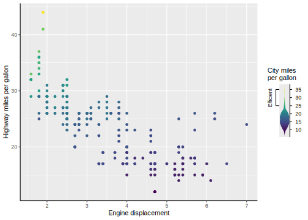

The goal of gguidance is to provide additional guide functionality to the ggplot2 ecosystem.
Installation
You can install the development version of gguidance from GitHub with:
# install.packages("devtools")
devtools::install_github("teunbrand/gguidance")Example
Let’s first set up a basic plot to experiment with:
library(gguidance)
#> Loading required package: ggplot2
base <- ggplot(mpg, aes(displ, hwy, colour = cty)) +
geom_point() +
labs(
x = "Engine displacement",
y = "Highway miles per gallon",
col = "City miles\nper gallon"
) +
theme(axis.line = element_line())The gguidance package offers a selection of what it calls ‘complete guides’. These complete guides can just be drop-in replacement of regular guides, which you can specify using ggplot2’s guides() function or using the guide argument in scales. In the example below, we’re using two custom variants of vanilla guides, namely guide_axis_base() and guide_colbar(). These custom variants have additional options that allow a greater degree of customisation:
- The axis guide has an option for bidirectional ticks.
- The colourbar automatically recognises out-of-bounds values and displays this with a cap.
base +
scale_colour_viridis_c(
limits = c(NA, 30),
guide = "colbar"
) +
guides(
x = guide_axis_base(bidi = TRUE)
)
Besides complete guides, gguidance also has incomplete guides that can be composed. The ggplot2::guide_axis_stack() is an axis composition function that can be used to display multiple guides. Here, we use a ‘primitive’ guide (incomplete building block) to display a range on the axis. By stacking it with a regular axis the primitive guide is completed.
# A partial guide to display a bracket
efficient_bracket <- primitive_bracket(
# Keys determine what is displayed
key = key_range_manual(start = 25, end = Inf, name = "Efficient"),
bracket = "square",
# We want vertical text
theme = theme(
legend.text = element_text(angle = 90, hjust = 0.5),
axis.text.y.left = element_text(angle = 90, hjust = 0.5)
)
)
base + guides(y = guide_axis_stack("axis", efficient_bracket))
The gguidance package extends this guide composition concept beyond the axes for other types of guides. In the example below we compose a ‘sandwich’: a central guide flanked by two others. Because our bracket is a primitive, it does not matter what aesthetic it displays and we can re-use it for the sandwich. I’ve yet to write the vignette on composition.
base +
scale_colour_viridis_c(
guide = compose_sandwich(
middle = gizmo_density(),
text = "axis_base",
opposite = efficient_bracket
)
)